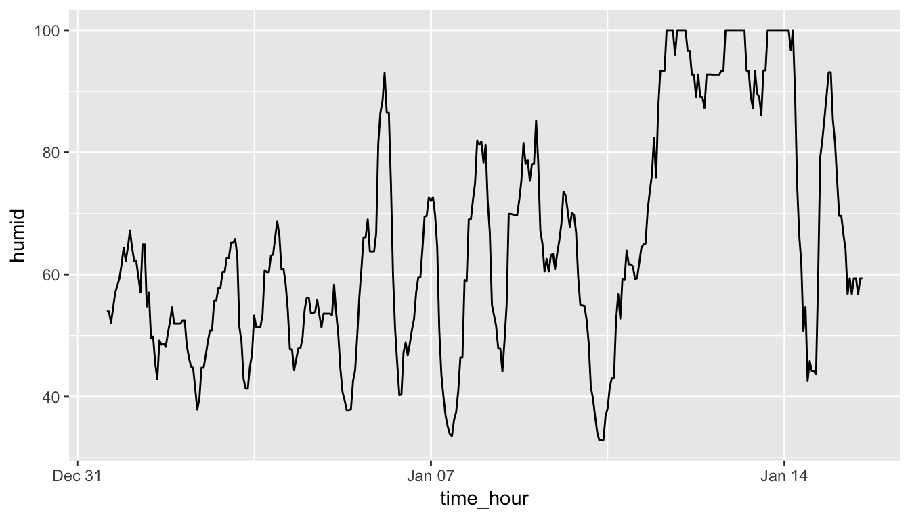

3 Data Visualization via ggplot2
We begin the development of your data science toolbox with data visualization. By visualizing our data, we will be able to gain valuable insights from our data that we couldn’t initially see from just looking at the raw data in spreadsheet form. We will use the ggplot2 package as it provides an easy way to customize your plots and is rooted in the data visualization theory known as The Grammar of Graphics (Wilkinson 2005).
At the most basic level, graphics/plots/charts (we use these terms interchangeably in this book) provide a nice way for us to get a sense for how quantitative variables compare in terms of their center (where the values tend to be located) and their spread (how they vary around the center). The most important thing to know about graphics is that they should be created to make it obvious for your audience to understand the findings and insight you want to get across. This does however require a balancing act. On the one hand, you want to highlight as many meaningful relationships and interesting findings as possible, but on the other you don’t want to include so many as to overwhelm your audience.
As we will see, plots/graphics also help us to identify patterns and outliers in our data. We will see that a common extension of these ideas is to compare the distribution of one quantitative variable (i.e., what the spread of a variable looks like or how the variable is distributed in terms of its values) as we go across the levels of a different categorical variable.
Needed packages
Let’s load all the packages needed for this chapter (this assumes you’ve already installed them). Read Section 2.3 for information on how to install and load R packages.
library(nycflights13)
library(ggplot2)
library(dplyr)DataCamp
Our approach to introducing data visualization via the Grammar of Graphics and the ggplot2 package is very similar to the approach taken in David Robinson’s DataCamp course “Introduction to the Tidyverse,” a course targetted at people new to R and the tidyverse. If you’re interested in complementing your learning below in an interactive online environment, click on the image below to access the course. The relevant chapters are Chapter 2 on “Data visualization” and Chapter 4 on “Types of visualizations”.

3.1 The Grammar of Graphics
We begin with a discussion of a theoretical framework for data visualization known as the “The Grammar of Graphics,” which serves as the basis for the ggplot2 package. Much like how we construct sentences in any language by using a linguistic grammar (nouns, verbs, subjects, objects, etc.), the theoretical framework given by Leland Wilkinson (Wilkinson 2005) allows us to specify the components of a statistical graphic.
3.1.1 Components of the Grammar
In short, the grammar tells us that:
A statistical graphic is a
mappingofdatavariables toaesthetic attributes ofgeometric objects.
Specifically, we can break a graphic into the following three essential components:
data: the data-set comprised of variables that we map.geom: the geometric object in question. This refers to our type of objects we can observe in our plot. For example, points, lines, bars, etc.aes: aesthetic attributes of the geometric object that we can perceive on a graphic. For example, x/y position, color, shape, and size. Each assigned aesthetic attribute can be mapped to a variable in our data-set.
Let’s break down the grammar with an example.
3.1.2 Gapminder
In February 2006, a statistician named Hans Rosling gave a TED talk titled “The best stats you’ve ever seen” where he presented global economic, health, and development data from the website gapminder.org. For example, from the 1704 countries included from 2007, consider only the first 6 countries when listed alphabetically:
| Country | Continent | Life Expectancy | Population | GDP per Capita |
|---|---|---|---|---|
| Afghanistan | Asia | 43.83 | 31889923 | 974.58 |
| Albania | Europe | 76.42 | 3600523 | 5937.03 |
| Algeria | Africa | 72.30 | 33333216 | 6223.37 |
| Angola | Africa | 42.73 | 12420476 | 4797.23 |
| Argentina | Americas | 75.32 | 40301927 | 12779.38 |
| Australia | Oceania | 81.23 | 20434176 | 34435.37 |
Each row in this table corresponds to a country in 2007. For each row, we have 5 columns:
- Country: Name of country.
- Continent: Which of the five continents the country is part of. (Note that
Americasgroups North and South America and that Antarctica is excluded here.) - Life Expectancy: Life expectancy in years.
- Population: Number of people living in the country.
- GDP per Capita: Gross domestic product (in US dollars).
Now consider Figure 3.1, which plots this data for all 142 countries in the data frame. Note that R will deal with large numbers using scientific notation. So in the legend for “Population”, 1.25e+09 = \(1.25 \times 10^{9}\) = 1,250,000,000 = 1.25 billion.

Figure 3.1: Life Expectancy over GDP per Capita in 2007
Let’s view this plot through the grammar of graphics:
- The
datavariable GDP per Capita gets mapped to thex-positionaesthetic of the points. - The
datavariable Life Expectancy gets mapped to they-positionaesthetic of the points. - The
datavariable Population gets mapped to thesizeaesthetic of the points. - The
datavariable Continent gets mapped to thecoloraesthetic of the points.
Recall that data here corresponds to each of the variables being in the same data frame and the “data variable” corresponds to a column in a data frame.
While in this example we are considering one type of geometric object (of type point), graphics are not limited to just points. Some plots involve lines while others involve bars. Let’s summarize the three essential components of the grammar in a table:
| data variable | aes | geom |
|---|---|---|
| GDP per Capita | x | point |
| Life Expectancy | y | point |
| Population | size | point |
| Continent | color | point |
3.1.3 Other components of the Grammar
There are other components of the Grammar of Graphics we can control. As you start to delve deeper into the Grammar of Graphics, you’ll start to encounter these topics more and more often. In this book, we’ll only work with the two other components below (The other components are left to a more advanced text such as R for Data Science (Grolemund and Wickham 2016)):
faceting breaks up a plot into small multiples corresponding to the levels of another variable (Section 3.6)positionadjustments for barplots (Section 3.8)
In general, the Grammar of Graphics allows for a high degree of customization and also a consistent framework for easy updating/modification of plots.
3.1.4 The ggplot2 package
In this book, we will be using the ggplot2 package for data visualization, which is an implementation of the Grammar of Graphics for R (Wickham, Chang, et al. 2018). You may have noticed that a lot of the previous text in this chapter is written in computer font. This is because the various components of the Grammar of Graphics are specified in the ggplot function, which expects at a bare minimum as arguments:
- The data frame where the variables exist: the
dataargument - The mapping of the variables to aesthetic attributes: the
mappingargument, which specifies theaesthetic attributes involved
After we’ve specified these components, we then add layers to the plot using the + sign. The most essential layer to add to a plot is the specification of which type of geometric object we want the plot to involve; e.g. points, lines, bars. Other layers we can add include the specification of the plot title, axes labels, facets, and visual themes for the plot.
Let’s now put the theory of the Grammar of Graphics into practice.
3.2 Five Named Graphs - The 5NG
For our purposes, we will be limiting consideration to five different types of graphs. We term these five named graphs the 5NG:
- scatterplots
- linegraphs
- boxplots
- histograms
- barplots
We will discuss some variations of these plots, but with this basic repertoire in your toolbox you can visualize a wide array of different data variable types. Note that certain plots are only appropriate for categorical/logical variables and others only for quantitative variables. You’ll want to quiz yourself often as we go along on which plot makes sense a given a particular problem or data-set.
3.3 5NG#1: Scatterplots
The simplest of the 5NG are scatterplots (also called bivariate plots); they allow you to investigate the relationship between two numerical variables. While you may already be familiar with this type of plot, let’s view it through the lens of the Grammar of Graphics. Specifically, we will graphically investigate the relationship between the following two numerical variables in the flights data frame:
dep_delay: departure delay on the horizontal “x” axis andarr_delay: arrival delay on the vertical “y” axis
for Alaska Airlines flights leaving NYC in 2013. This requires paring down the flights data frame to a smaller data frame all_alaska_flights consisting of only Alaska Airlines (carrier code “AS”) flights. Don’t worry for now if you don’t fully understand what this code is doing, we’ll explain this in details Chapter 5, just run it all and understand that we are taking all flights and only considering those corresponding to Alaska Airlines.
all_alaska_flights <- flights %>%
filter(carrier == "AS")This code snippet makes use of functions in the dplyr package for data wrangling to achieve our goal: it takes the flights data frame and filters it to only return the rows which meet the condition carrier == "AS". Recall from Section 2.2 that testing for equality is specified with == and not =. You will see many more examples of == and filter() in Chapter 5.
Learning check
(LC3.1) Take a look at both the flights and all_alaska_flights data frames by running View(flights) and View(all_alaska_flights) in the console. In what respect do these data frames differ?
Learning Check Solutions
(LC3.1): flights contains all flight data, while all_alaska_flights contains only data from Alaskan carrier “AS”. We can see that flights has 336776 rows while all_alaska_flights has only 714
3.3.1 Scatterplots via geom_point
We proceed to create the scatterplot using the ggplot() function:
ggplot(data = all_alaska_flights, mapping = aes(x = dep_delay, y = arr_delay)) +
geom_point()
Figure 3.2: Arrival Delays vs Departure Delays for Alaska Airlines flights from NYC in 2013
In Figure 3.2 we see that a positive relationship exists between dep_delay and arr_delay: as departure delays increase, arrival delays tend to also increase. We also note that the majority of points fall near the point (0, 0). There is a large mass of points clustered there. Furthermore after executing this code, R returns a warning message alerting us to the fact that 5 rows were ignored due to mising values. For 5 rows either the value for dep_delay or arr_delay or both were missing, and thus these rows were ignored in our plot.
Let’s go back to the ggplot() function call that created this visualization, keeping in mind our discussion in Section 3.1:
- Within the
ggplot()function call, we specify two of the components of the grammar:- The
dataframe to beall_alaska_flightsby settingdata = all_alaska_flights - The
aestheticmappingby settingaes(x = dep_delay, y = arr_delay). Specifically- the variable
dep_delaymaps to thexposition aesthetic - the variable
arr_delaymaps to theyposition aesthetic
- the variable
- The
- We add a layer to the
ggplot()function call using the+sign. The layer in question specifies the third component of the grammar: thegeometric object. In this case the geometric object arepoints, set by specifyinggeom_point().
Some notes on layers:
- Note that the
+sign comes at the end of lines, and not at the beginning. You’ll get an error in R if you put it at the beginning. - When adding layers to a plot, you are encouraged to hit Return on your keyboard after entering the
+so that the code for each layer is on a new line. As we add more and more layers to plots, you’ll see this will greatly improve the legibility of your code. - To stress the importance of adding layers, in particular the layer specifying the
geometric object, consider Figure 3.3 where no layers are added. A not very useful plot!
ggplot(data = all_alaska_flights, mapping = aes(x = dep_delay, y = arr_delay))Figure 3.3: Plot with No Layers
Learning check
(LC3.2) What are some practical reasons why dep_delay and arr_delay have a positive relationship?
(LC3.3) What variables (not necessarily in the flights data frame) would you expect to have a negative correlation (i.e. a negative relationship) with dep_delay? Why? Remember that we are focusing on numerical variables here.
(LC3.4) Why do you believe there is a cluster of points near (0, 0)? What does (0, 0) correspond to in terms of the Alaskan flights?
(LC3.5) What are some other features of the plot that stand out to you?
(LC3.6) Create a new scatterplot using different variables in the all_alaska_flights data frame by modifying the example above.
Learning Check Solutions
(LC3.2): The later a plane departs, typically the later it will arrive.
(LC3.3): An example in the weather dataset is visibility, which measure visibility in miles. As visibility increases, we would expect departure delays to decrease.
(LC3.4): The point (0,0) means no delay in departure nor arrival. From the point of view of Alaska airlines, this means the flight was on time. It seems most flights are at least close to being on time.
(LC3.5): Different people will answer this one differently. One answer is most flights depart and arrive less than an hour late.
(LC3.6): Many possibilities for this one, see the plot below. Is there a pattern in departure delay depending on when the flight is scheduled to depart? Interestingly, there seems to be only two blocks of time where flights depart.
ggplot(data = all_alaska_flights, mapping = aes(x = dep_time, y = dep_delay)) +
geom_point()
3.3.2 Over-plotting
The large mass of points near (0, 0) in Figure 3.2 can cause some confusion. This is the result of a phenomenon called overplotting. As one may guess, this corresponds to values being plotted on top of each other over and over again. It is often difficult to know just how many values are plotted in this way when looking at a basic scatterplot as we have here. There are two ways to address this issue:
- By adjusting the transparency of the points via the
alphaargument - By jittering the points via
geom_jitter()
The first way of relieving overplotting is by changing the alpha argument in geom_point() which controls the transparency of the points. By default, this value is set to 1. We can change this to any value between 0 and 1 where 0 sets the points to be 100% transparent and 1 sets the points to be 100% opaque. Note how the following function call is identical to the one in Section 3.3, but with alpha = 0.2 added to the geom_point().
ggplot(data = all_alaska_flights, mapping = aes(x = dep_delay, y = arr_delay)) +
geom_point(alpha = 0.2)Figure 3.4: Delay scatterplot with alpha=0.2
The key feature to note in Figure 3.4 is that the transparency of the points is cumulative: areas with a high-degree of overplotting are darker, whereas areas with a lower degree are less dark.
Note that there is no aes() surrounding alpha = 0.2 here. Since we are NOT mapping a variable to an aesthetic but instead are just changing a setting, we don’t need to create a mapping with aes(). In fact, you’ll receive an error if you try to change the second line above to geom_point(aes(alpha = 0.2)).
The second way of relieving overplotting is to jitter the points a bit. In other words, we are going to add just a bit of random noise to the points to better see them and alleviate some of the overplotting. You can think of “jittering” as shaking the points around a bit on the plot. Let’s illustrate using a simple example first. Say we have a data frame jitter_example with 4 rows of identical value 0 for both x and y:
jitter_example# A tibble: 4 x 2
x y
<dbl> <dbl>
1 0 0
2 0 0
3 0 0
4 0 0We display the resulting scatterplot in Figure 3.5; observe that the 4 points are superimposed on top of each other. While we know there are 4 values being plotted, this fact might not be apparent to others.

Figure 3.5: Regular scatterplot of jitter example data
In Figure 3.6 we instead display a jittered scatterplot. Since each point is given a random “nudge”, it is now plainly evident that there are four points.

Figure 3.6: Jittered scatterplot of jitter example data
To create a jittered scatterplot, instead of using geom_point, we use geom_jitter. To specify how much jitter to add, we adjust the width and height arguments. This corresponds to how hard you’d like to shake the plot in units corresponding to those for both the horizontal and vertical variables (in this case, minutes). It is important to add just enough jitter to break any overlap in points, but not so much that we completely obscure the overall pattern in points.
ggplot(data = all_alaska_flights, mapping = aes(x = dep_delay, y = arr_delay)) +
geom_jitter(width = 30, height = 30)
Figure 3.7: Jittered delay scatterplot
Observe how this function call is identical to the one in Subsection 3.3.1, but with geom_point() replaced with geom_jitter(). Also, it is important to note that geom_jitter() is strictly a visualization tool and that does not alter the original values saved in jitter_example.
The plot in Figure 3.7 helps us a little bit in getting a sense for the overplotting, but with a relatively large data-set like this one (714 flights), it can be argued that changing the transparency of the points by setting alpha proved more effective.
Furthermore, we’ll see later on that the two following R commands will yield the exact same plot:
ggplot(data = all_alaska_flights, mapping = aes(x = dep_delay, y = arr_delay)) +
geom_jitter(width = 30, height = 30)
ggplot(all_alaska_flights, aes(x = dep_delay, y = arr_delay)) +
geom_jitter(width = 30, height = 30)In other words you can drop the data = and mapping = if you keep the order of the two arguments the same. Since the ggplot() function is expecting its first argument data to be a data frame and its second argument to correspond to mapping =, you can omit both and you’ll get the same plot. As you get more and more practice, you’ll likely find yourself not including the specification of the argument like this. But for now to keep things straightforward let’s make it a point to include the data = and mapping =.
Learning check
(LC3.7) Why is setting the alpha argument value useful with scatterplots? What further information does it give you that a regular scatterplot cannot?
(LC3.8) After viewing the Figure 3.4 above, give an approximate range of arrival delays and departure delays that occur the most frequently. How has that region changed compared to when you observed the same plot without the alpha = 0.2 set in Figure 3.2?
Learning Check Solutions
(LC3.7): Why is setting the alpha argument value useful with scatterplots? What further information does it give you that a regular scatterplot cannot? It thins out the points so we address overplotting. But more importantly it hints at the (statistical) density and distribution of the points: where are the points concentrated, where do they occur. We will see more about densities and distributions in Chapter 6 when we switch gears to statistical topics.
(LC3.8): After viewing the Figure 3.4 above, give a range of arrival delays and departure delays that occur most frequently? How has that region changed compared to when you observed the same plot without the alpha = 0.2 set in Figure 3.2? The lower plot suggests that most Alaska flights from NYC depart between 12 minutes early and on time and arrive between 50 minutes early and on time.
3.3.3 Summary
Scatterplots display the relationship between two numerical variables. They are among the most commonly used plots because they can provide an immediate way to see the trend in one variable versus another. However, if you try to create a scatterplot where either one of the two variables is not numerical, you will get strange results. Be careful!
With medium to large data-sets, you may need to play with either geom_jitter() or the alpha argument in order to get a good feel for relationships in your data. This tweaking is often a fun part of data visualization since you’ll have the chance to see different relationships come about as you make subtle changes to your plots.
3.4 5NG#2: Linegraphs
The next of the 5NG is a linegraph. They are most frequently used when the x-axis represents time and the y-axis represents some other numerical variable; such plots are known as time series. Time represents a variable that is connected together by each day following the previous day. In other words, time has a natural ordering. Linegraphs should be avoided when there is not a clear sequential ordering to the explanatory variable, i.e. the x-variable or the predictor variable.
Our focus now turns to the temp variable in this weather data-set. By
- Looking over the
weatherdata-set by typingView(weather)in the console. - Running
?weatherto bring up the help file.
We can see that the temp variable corresponds to hourly temperature (in Fahrenheit) recordings at weather stations near airports in New York City. Instead of considering all hours in 2013 for all three airports in NYC, let’s focus on the hourly temperature at Newark airport (origin code “EWR”) for the first 15 days in January 2013. The weather data frame in the nycflights13 package contains this data, but we first need to filter it to only include those rows that correspond to Newark in the first 15 days of January.
early_january_weather <- weather %>%
filter(origin == "EWR" & month == 1 & day <= 15)This is similar to the previous use of the filter command in Section 3.3, however we now use the & operator. The above selects only those rows in weather where the originating airport is "EWR" and we are in the first month and the day is from 1 to 15 inclusive.
Learning check
(LC3.9) Take a look at both the weather and early_january_weather data frames by running View(weather) and View(early_january_weather) in the console. In what respect do these data frames differ?
(LC3.10) View() the flights data frame again. Why does the time_hour variable uniquely identify the hour of the measurement whereas the hour variable does not?
Learning Check Solutions
(LC3.9): Take a look at both the weather and early_january_weather data frames by running View(weather) and View(early_january_weather) in the console. In what respect do these data frames differ? The rows of early_january_weather are a subset of weather.
(LC3.10): View() the flights data frame again. Why does the time_hour variable correctly identify the hour of the measurement whereas the hour variable does not? Because to uniquely identify an hour, we need the year/month/day/hour sequence, whereas there are only 24 possible hour’s.
3.4.1 Linegraphs via geom_line
We plot a linegraph of hourly temperature using geom_line():
ggplot(data = early_january_weather, mapping = aes(x = time_hour, y = temp)) +
geom_line()
Figure 3.8: Hourly Temperature in Newark for January 1-15, 2013
Much as with the ggplot() call in Chapter 3.3.1, we describe the components of the Grammar of Graphics:
- Within the
ggplot()function call, we specify two of the components of the grammar:- The
dataframe to beearly_january_weatherby settingdata = early_january_weather - The
aesthetic mapping by settingaes(x = time_hour, y = temp). Specificallytime_hour(i.e. the time variable) maps to thexpositiontempmaps to theyposition
- The
- We add a layer to the
ggplot()function call using the+sign - The layer in question specifies the third component of the grammar: the
geometric object in question. In this case the geometric object is aline, set by specifyinggeom_line().
Learning check
(LC3.11) Why should linegraphs be avoided when there is not a clear ordering of the horizontal axis?
(LC3.12) Why are linegraphs frequently used when time is the explanatory variable?
(LC3.13) Plot a time series of a variable other than temp for Newark Airport in the first 15 days of January 2013.
Learning Check Solutions
(LC3.11): Why should linegraphs be avoided when there is not a clear ordering of the horizontal axis? Because lines suggest connectedness and ordering.
(LC3.12): Why are linegraphs frequently used when time is the explanatory variable? Because time is sequential: subsequent observations are closely related to each other.
(LC3.13): Plot a time series of a variable other than temp for Newark Airport in the first 15 days of January 2013. Humidity is a good one to look at, since this very closely related to the cycles of a day.
ggplot(data = early_january_weather, mapping = aes(x = time_hour, y = humid)) +
geom_line()
3.4.2 Summary
Linegraphs, just like scatterplots, display the relationship between two numerical variables. However, the variable on the x-axis (i.e. the explanatory variable) should have a natural ordering, like some notion of time. We can mislead our audience if that isn’t the case.
3.5 5NG#3: Histograms
Let’s consider the temp variable in the weather data frame once again, but now unlike with the linegraphs in Chapter 3.4, let’s say we don’t care about the relationship of temperature to time, but rather we care about the (statistical) distribution of temperatures. We could just produce points where each of the different values appear on something similar to a number line:

Figure 3.9: Plot of Hourly Temperature Recordings from NYC in 2013
This gives us a general idea of how the values of temp differ. We see that temperatures vary from around 11 up to 100 degrees Fahrenheit. The area between 40 and 60 degrees appears to have more points plotted than outside that range.
3.5.1 Histograms via geom_histogram
What is commonly produced instead of the above plot is a plot known as a histogram. The histogram shows how many elements of a single numerical variable fall in specified bins. In this case, these bins may correspond to between 0-10°F, 10-20°F, etc. We produce a histogram of the hour temperatures at all three NYC airports in 2013:
ggplot(data = weather, mapping = aes(x = temp)) +
geom_histogram()`stat_bin()` using `bins = 30`. Pick better value with `binwidth`.Warning: Removed 1 rows containing non-finite values (stat_bin).
Figure 3.10: Histogram of Hourly Temperature Recordings from NYC in 2013
Note here:
- There is only one variable being mapped in
aes(): the single numerical variabletemp. You don’t need to compute the y-aesthetic: it gets computed automatically. - We set the
geometric object to begeom_histogram() - We got a warning message of
1 rows containing non-finite valuesbeing removed. This is due to one of the values of temperature being missing. R is alerting us that this happened.
- Another warning corresponds to an urge to specify the number of bins you’d like to create.
3.5.2 Adjusting the bins
We can adjust characteristics of the bins in one of two ways:
- By adjusting the number of bins via the
binsargument - By adjusting the width of the bins via the
binwidthargument
First, we have the power to specify how many bins we would like to put the data into as an argument in the geom_histogram() function. By default, this is chosen to be 30 somewhat arbitrarily; we have received a warning above our plot that this was done.
ggplot(data = weather, mapping = aes(x = temp)) +
geom_histogram(bins = 60, color = "white")
Figure 3.11: Histogram of Hourly Temperature Recordings from NYC in 2013 - 60 Bins
Note the addition of the color argument. If you’d like to be able to more easily differentiate each of the bins, you can specify the color of the outline as done above. You can also adjust the color of the bars by setting the fill argument. Type colors() in your console to see all 657 available colors.
ggplot(data = weather, mapping = aes(x = temp)) +
geom_histogram(bins = 60, color = "white", fill = "steelblue")
Figure 3.12: Histogram of Hourly Temperature Recordings from NYC in 2013 - 60 Colored Bins
Second, instead of specifying the number of bins, we can also specify the width of the bins by using the binwidth argument in the geom_histogram function.
ggplot(data = weather, mapping = aes(x = temp)) +
geom_histogram(binwidth = 10, color = "white")Figure 3.13: Histogram of Hourly Temperature Recordings from NYC in 2013 - Binwidth = 10
Learning check
(LC3.14) What does changing the number of bins from 30 to 60 tell us about the distribution of temperatures?
(LC3.15) Would you classify the distribution of temperatures as symmetric or skewed?
(LC3.16) What would you guess is the “center” value in this distribution? Why did you make that choice?
(LC3.17) Is this data spread out greatly from the center or is it close? Why?
Learning Check Solutions
(LC3.14): What does changing the number of bins from 30 to 60 tell us about the distribution of temperatures? The distribution doesn’t change much. But by refining the bid width, we see that the temperature data has a high degree of accuracy. What do I mean by accuracy? Looking at the temp variabile by View(weather), we see that the precision of each temperature recording is 2 decimal places.
(LC3.15): Would you classify the distribution of temperatures as symmetric or skewed? It is rather symmetric, i.e. there are no long tails on only one side of the distribution
(LC3.16): What would you guess is the “center” value in this distribution? Why did you make that choice? The center is around 55.2603921°F. By running the summary() command, we see that the mean and median are very similar. In fact, when the distribution is symmetric the mean equals the median.
(LC3.17): Is this data spread out greatly from the center or is it close? Why?
This can only be answered relatively speaking! Let’s pick things to be relative to Seattle, WA temperatures:

While, it appears that Seattle weather has a similar center of 55°F, its temperatures are almost entirely between 35°F and 75°F for a range of about 40°F. Seattle temperatures are much less spread out than New York i.e. much more consistent over the year. New York on the other hand has much colder days in the winter and much hotter days in the summer. Expressed differently, the middle 50% of values, as delineated by the interquartile range is 30°F:
IQR(weather$temp, na.rm=TRUE)[1] 30.06summary(weather$temp) Min. 1st Qu. Median Mean 3rd Qu. Max. NA's
10.94 39.92 55.40 55.26 69.98 100.04 1 3.5.3 Summary
Histograms, unlike scatterplots and linegraphs, present information on only a single numerical variable. In particular they are visualizations of the (statistical) distribution of values.
3.6 Facets
Before continuing the 5NG, we briefly introduce a new concept called faceting. Faceting is used when we’d like to create small multiples of the same plot over a different categorical variable. By default, all of the small multiples will have the same vertical axis.
For example, suppose we were interested in looking at how the temperature histograms we saw in Chapter 3.5 varied by month. This is what is meant by “the distribution of a variable over another variable”: temp is one variable and month is the other variable. In order to look at histograms of temp for each month, we add a layer facet_wrap(~ month). You can also specify how many rows you’d like the small multiple plots to be in using nrow or how many columns using ncol inside of facet_wrap.
ggplot(data = weather, mapping = aes(x = temp)) +
geom_histogram(binwidth = 5, color = "white") +
facet_wrap(~ month, nrow = 4)
Figure 3.14: Faceted histogram
Note the use of the ~ before month in facet_wrap. The tilde (~) is required and you’ll receive the error Error in as.quoted(facets) : object 'month' not found if you don’t include it before month here.
As we might expect, the temperature tends to increase as summer approaches and then decrease as winter approaches.
Learning check
(LC3.18) What other things do you notice about the faceted plot above? How does a faceted plot help us see relationships between two variables?
(LC3.19) What do the numbers 1-12 correspond to in the plot above? What about 25, 50, 75, 100?
(LC3.20) For which types of data-sets would these types of faceted plots not work well in comparing relationships between variables? Give an example describing the nature of these variables and other important characteristics.
(LC3.21) Does the temp variable in the weather data-set have a lot of variability? Why do you say that?
Learning Check Solutions
(LC3.18): What other things do you notice about the faceted plot above? How does afaceted plot help us see relationships between two variables?
- Certain months have much more consistent weather (August in particular), while others have crazy variability like January and October, representing changes in the seasons.
- The two variables we are see the relationship of are
tempandmonth.
(LC3.19): What do the numbers 1-12 correspond to in the plot above? What about 25, 50, 75, 100?
- While month is technically a number between 1-12, we’re viewing it as a categorical variable here. Specifically an ordinal categorical variable since there is a ordering to the categories
- 25, 50, 75, 100 are temperatures
(LC3.20): For which types of datasets would these types of faceted plots not work well in comparing relationships between variables? Give an example describing the variability of the variables and other important characteristics? Having histograms split by day would not be great:
- We’d have 365 facets to look at. Way to many.
- We don’t really care about day-to-day fluctuation in weather so much, but maybe more week-to-week variation. We’d like to focus on seasonal trends.
(LC3.21): Does the temp variable in the weather dataset have a lot of variability? Why do you say that? Again, like in LC (LC3.17), this is a relative question. I would say yes, because in New York City, you have 4 clear seasons with different weather. Whereas in Seattle WA and Portland OR, you have two seasons: summer and rain!
3.7 5NG#4: Boxplots
While using faceted histograms can provide a way to compare distributions of a numerical variable split by groups of a categorical variable as in Section 3.6, an alternative plot called a boxplot (also called a side-by-side boxplot) achieves the same task and is frequently preferred. The boxplot uses the information provided in the five-number summary referred to in Appendix A. It gives a way to compare this summary information across the different levels of a categorical variable.
3.7.1 Boxplots via geom_boxplot
Let’s create a boxplot to compare the monthly temperatures as we did above with the faceted histograms.
ggplot(data = weather, mapping = aes(x = month, y = temp)) +
geom_boxplot()Figure 3.15: Invalid boxplot specification
Warning messages:
1: Continuous x aesthetic -- did you forget aes(group=...)?
2: Removed 1 rows containing non-finite values (stat_boxplot). Note the set of warnings that is given here. The second warning corresponds to missing values in the data frame and it is turned off on subsequent plots. Let’s focus on the first warning.
Observe that this plot does not look like what we were expecting. We were expecting to see the distribution of temperatures for each month (so 12 different boxplots). The first warning is letting us know that we are plotting a numerical, and not categorical variable, on the x-axis. This gives us the overall boxplot without any other groupings. We can get around this by introducing a new function for our x variable:
ggplot(data = weather, mapping = aes(x = factor(month), y = temp)) +
geom_boxplot()
Figure 3.16: Month by temp boxplot
We have introduced a new function called factor() here which converts a discrete numerical values, like month whose values are the numbers 1 through 12, into a categorical variable variable with “labels” 1 through 12. So for example, after converting month to a categorical variable, we couldn’t perform any mathematical operations on its values. Note also that the labels have an ordering on the x-axis in Figure 3.16; this ordering is based on the alphanumeric ordering of the numbers 1 through 12.
The resulting Figure 3.16 shows 12 separate “box and whiskers” plots with the following features:
- The “box” portions of this plot represent the 25th percentile AKA the 1st quartile, the median AKA the 50th percentile AKA the 2nd quartile, and the 75th percentile AKA the 3rd quartile.
- The height of each box, i.e. the value of the 3rd quartile minus the value of the 1st quartile, is called the interquartile range (\(IQR\)). It is a measure of spread of the middle 50% of values, with longer boxes indicating more variability.
- The “whisker” portions of these plots extend out from the bottoms and tops of the boxes and represent points less than the 25th percentile and greater than the 75th percentiles respectively. They’re set to extend out no more than \(1.5 \times IQR\) units away from either end of the boxes. We say “no more than” because the ends of the whiskers represent the first observed values of
tempto be within the range of the whiskers. The length of these whiskers show how the data outside the middle 50% of values vary, with longer whiskers indicating more variability. - The dots representing values falling outside the whiskers are called outliers. It is important to keep in mind that the definition of an outlier is somewhat arbitrary and not absolute. In this case, they are defined by the length of the whiskers, which are no more than \(1.5 \times IQR\) units long.
Looking at this plot we can see, as expected, that summer months (6 through 8) have higher median temperatures as evidenced by the higher solid lines in the middle of the boxes. We can easily compare temperatures across months by drawing imaginary horizontal lines across the plot. Furthermore, the height of the 12 boxes as quantified by the interquartile ranges are informative too; they tell us about variability, or spread, of temperatures recorded in a given month.
But to really bring home what boxplots show, let’s focus only on the month of November’s 2141 temperature recordings.
Figure 3.17: November boxplot
Now let’s plot all 2141 temperature recordings for November on top of the boxplot in Figure 3.18.

Figure 3.18: November boxplot with points
What the boxplot does is summarize the 2141 points for you, in particular:
- 25% of points (about 534 observations) fall below the bottom edge of the box which is the first quartile of 35.96 degrees Farenheit (2.2 degrees Celsius). In other words 25% of observations were colder than 35.96 degrees Farenheit.
- 25% of points fall between the bottom edge of the box and the solid middle line which is the median of 44.96 degrees Farenheit (7.8 degrees Celsius). In other words 25% of observations were between 35.96 and 44.96 degrees Farenheit.
- 25% of points fall between the solid middle line and the top edge of the box which is the third quartile of 51.98 degrees Farenheit (11.1 degrees Celsius). In other words 25% of observations were between 44.96 and 51.98 degrees Farenheit.
- 25% of points fall over the top edge of the box. In other words 25% of observations were warmer than 51.98 degrees Farenheit.
- The middle 50% of points lie within the interquartile range 16.02 degrees Farenheit.
Learning check
(LC3.22) What does the dot at the bottom of the plot for May correspond to? Explain what might have occurred in May to produce this point.
(LC3.23) Which months have the highest variability in temperature? What reasons do you think this is?
(LC3.24) We looked at the distribution of a numerical variable over a categorical variable here with this boxplot. Why can’t we look at the distribution of one numerical variable over the distribution of another numerical variable? Say, temperature across pressure, for example?
(LC3.25) Boxplots provide a simple way to identify outliers. Why may outliers be easier to identify when looking at a boxplot instead of a faceted histogram?
Learning Check Solutions
(LC3.22): What does the dot at the bottom of the plot for May correspond to? Explain what might have occurred in May to produce this point. It appears to be an outlier. Let’s revisit the use of the filter command to hone in on it. We want all data points where the month is 5 and temp<25
weather %>%
filter(month==5 & temp < 25)# A tibble: 1 x 15
origin year month day hour temp dewp humid wind_dir wind_speed
<chr> <dbl> <dbl> <int> <int> <dbl> <dbl> <dbl> <dbl> <dbl>
1 JFK 2013 5 8 22 13.1 12.0 95.3 80 8.06
# ... with 5 more variables: wind_gust <dbl>, precip <dbl>, pressure <dbl>,
# visib <dbl>, time_hour <dttm>There appears to be only one hour and only at JFK that recorded 13.1 F (-10.5 C) in the month of May. This is probably a data entry mistake! Why wasn’t the weather at least similar at EWR (Newark) and LGA (La Guardia)?
(LC3.23): Which months have the highest variability in temperature? What reasons do you think this is? We are now interested in the spread of the data. One measure some of you may have seen previously is the standard deviation. But in this plot we can read off the Interquartile Range (IQR):
- The distance from the 1st to the 3rd quartiles i.e. the length of the boxes
- You can also think of this as the spread of the middle 50% of the data
Just from eyeballing it, it seems
- November has the biggest IQR, i.e. the widest box, so has the most variation in temperature
- August has the smallest IQR, i.e. the narrowest box, so is the most consistent temperature-wise
Here’s how we compute the exact IQR values for each month (we’ll see this more in depth Chapter 5 of the text):
groupthe observations bymonththen- for each
group, i.e.month,summarizeit by applying the summary statistic functionIQR(), while making sure to skip over missing data viana.rm=TRUEthen arrangethe table indescending order ofIQR
weather %>%
group_by(month) %>%
summarize(IQR = IQR(temp, na.rm=TRUE)) %>%
arrange(desc(IQR))| month | IQR |
|---|---|
| 11 | 16.02 |
| 12 | 14.04 |
| 1 | 13.77 |
| 9 | 12.06 |
| 4 | 12.06 |
| 5 | 11.88 |
| 6 | 10.98 |
| 10 | 10.98 |
| 2 | 10.08 |
| 7 | 9.18 |
| 3 | 9.00 |
| 8 | 7.02 |
(LC3.24): We looked at the distribution of a numerical variable over a categorical variable here with this boxplot. Why can’t we look at the distribution of one numerical variable over the distribution of another numerical variable? Say, temperature across pressure, for example? Because we need a way to group many numerical observations together, say by grouping by month. For pressure, we have near unique values for pressure, i.e. no groups, so we can’t make boxplots.
(LC3.25): Boxplots provide a simple way to identify outliers. Why may outliers be easier to identify when looking at a boxplot instead of a faceted histogram? In a histogram, the bin corresponding to where an outlier lies may not by high enough for us to see. In a boxplot, they are explicitly labelled separately.
3.7.2 Summary
Boxplots provide a way to compare and contrast the distribution of one quantitative variable across multiple levels of one categorical variable. One can see where the median falls across the different groups by looking at the center line in the box. To see how spread out the variable is across the different groups, look at both the width of the box and also how far the lines stretch vertically from the box. (If the lines stretch far from the box but the box has a small width, the variability of the values closer to the center is much smaller than the variability of the outer ends of the variable.) Outliers are even more easily identified when looking at a boxplot than when looking at a histogram.
3.8 5NG#5: Barplots
Both histograms and boxplots represent ways to visualize the variability of numerical variables. Another common task is to present the distribution of a categorical variable. This is a simpler task, focused on how many elements from the data fall into different categories of the categorical variable. Often the best way to visualize these different counts (also known as frequencies) is via a barplot, also known as a barchart.
One complication, however, is how your data is represented: is the categorical variable of interest “pre-counted” or not? For example, run the following code in your Console. This code manually creates two data frames representing a collection of fruit: 3 apples and 2 oranges.
fruits <- data_frame(
fruit = c("apple", "apple", "apple", "orange", "orange")
)
fruits_counted <- data_frame(
fruit = c("apple", "orange"),
number = c(3, 2)
)We see both the fruits and fruits_counted data frames represent the same collection of fruit. Whereas fruits just lists the fruit individually:
| fruit |
|---|
| apple |
| apple |
| apple |
| orange |
| orange |
fruits_counted has a variable count which represents pre-counted values of each fruit.
| fruit | number |
|---|---|
| apple | 3 |
| orange | 2 |
3.8.1 Barplots via geom_bar/geom_col
Let’s generate barplots using these two different representations of the same basket of fruit: 3 apples and 2 oranges. Using the not pre-counted data fruits from Table 3.3:
ggplot(data = fruits, mapping = aes(x = fruit)) +
geom_bar()
Figure 3.19: Barplot when counts are not pre-counted
and using the pre-counted data fruits_counted from Table 3.4:
ggplot(data = fruits_counted, mapping = aes(x = fruit, y = number)) +
geom_col()
Figure 3.20: Barplot when counts are pre-counted
Compare the barplots in Figures 3.19 and 3.20, which are identical, but are based on the two different data frames. Observe that:
- The code that generates Figure 3.19 based on
fruitsdoes not map a variable to theyaesthetic and usesgeom_bar(). - The code that generates Figure 3.20 based on
fruits_countedmaps thenumbervariable to theyaesthetic and usesgeom_col()
Stating the above differently:
- When the categorical variable you want to plot is not pre-counted in your data frame you need to use
geom_bar(). - When the categorical variable is pre-counted (in the above
fruits_countedexample in the variablenumber), you need to usegeom_col()with theyaesthetic explicitly mapped.
Please note that understanding this difference is one of ggplot2’s trickier aspects that causes the most confusion, and fortunately this is as complicated as our use of ggplot2 is going to get. Let’s consider a different distribution: the distribution of airlines that flew out of New York City in 2013. Here we explore the number of flights from each airline/carrier. This can be plotted by invoking the geom_bar function in ggplot2:
ggplot(data = flights, mapping = aes(x = carrier)) +
geom_bar()Figure 3.21: Number of flights departing NYC in 2013 by airline using geom_bar
To get an understanding of what the names of these airlines are corresponding to these carrier codes, we can look at the airlines data frame in the nycflights13 package.
airlines| carrier | name |
|---|---|
| 9E | Endeavor Air Inc. |
| AA | American Airlines Inc. |
| AS | Alaska Airlines Inc. |
| B6 | JetBlue Airways |
| DL | Delta Air Lines Inc. |
| EV | ExpressJet Airlines Inc. |
| F9 | Frontier Airlines Inc. |
| FL | AirTran Airways Corporation |
| HA | Hawaiian Airlines Inc. |
| MQ | Envoy Air |
| OO | SkyWest Airlines Inc. |
| UA | United Air Lines Inc. |
| US | US Airways Inc. |
| VX | Virgin America |
| WN | Southwest Airlines Co. |
| YV | Mesa Airlines Inc. |
Going back to our barplot, we see that United Air Lines, JetBlue Airways, and ExpressJet Airlines had the most flights depart New York City in 2013. To get the actual number of flights by each airline we can use the group_by(), summarize(), and n() functions in the dplyr package on the carrier variable in flights, which we will introduce formally in Chapter 5.
flights_table <- flights %>%
group_by(carrier) %>%
summarize(number = n())
flights_table| carrier | number |
|---|---|
| 9E | 18460 |
| AA | 32729 |
| AS | 714 |
| B6 | 54635 |
| DL | 48110 |
| EV | 54173 |
| F9 | 685 |
| FL | 3260 |
| HA | 342 |
| MQ | 26397 |
| OO | 32 |
| UA | 58665 |
| US | 20536 |
| VX | 5162 |
| WN | 12275 |
| YV | 601 |
In this table, the counts of the carriers are pre-counted. To create a barplot using the data frame flights_table, we
- use
geom_col()instead ofgeom_bar() - map the
yaesthetic to the variablenumber.
Compare this barplot using geom_col in Figure 3.22 with the earlier barplot using geom_bar in Figure 3.21. They are identical. However the input data we used for these are different.
ggplot(data = flights_table, mapping = aes(x = carrier, y = number)) +
geom_col()Figure 3.22: Number of flights departing NYC in 2013 by airline using geom_col
Learning check
(LC3.26) Why are histograms inappropriate for visualizing categorical variables?
(LC3.27) What is the difference between histograms and barplots?
(LC3.28) How many Envoy Air flights departed NYC in 2013?
(LC3.29) What was the seventh highest airline in terms of departed flights from NYC in 2013? How could we better present the table to get this answer quickly?
Learning Check Solutions
- (LC3.26): Why are histograms inappropriate for visualizing categorical variables? Histograms are for numerical variables i.e. the horizontal part of each histogram bar represents an interval, whereas for a categorical variable each bar represents only one level of the categorical variable.
- (LC3.27): What is the difference between histograms and barplots? See above.
- (LC3.28): How many Envoy Air flights departed NYC in 2013? Envoy Air is carrier code
MQand thus 26397 flights departed NYC in 2013. - (LC3.29): What was the seventh highest airline in terms of departed flights from NYC in 2013? How could we better present the table to get this answer quickly? What a pain! We’ll see in Chapter 5 on Data Wrangling that applying
arrange(desc(n))will sort this table in descending order ofn!
3.8.2 Must avoid pie charts!
Unfortunately, one of the most common plots seen today for categorical data is the pie chart. While they may see harmless enough, they actually present a problem in that humans are unable to judge angles well. As Naomi Robbins describes in her book “Creating More Effective Graphs” (Robbins 2013), we overestimate angles greater than 90 degrees and we underestimate angles less than 90 degrees. In other words, it is difficult for us to determine relative size of one piece of the pie compared to another.
Let’s examine our previous barplot example on the number of flights departing NYC by airline. This time we will use a pie chart. As you review this chart, try to identify
- how much larger the portion of the pie is for ExpressJet Airlines (
EV) compared to US Airways (US), - what the third largest carrier is in terms of departing flights, and
- how many carriers have fewer flights than United Airlines (
UA)?

Figure 3.23: The dreaded pie chart
While it is quite easy to look back at the barplot to get the answer to these questions, it’s quite difficult to get the answers correct when looking at the pie graph. Barplots can always present the information in a way that is easier for the eye to determine relative position. There may be one exception from Nathan Yau at FlowingData.com but we will leave this for the reader to decide:

Figure 3.24: The only good pie chart
Learning check
(LC3.30) Why should pie charts be avoided and replaced by barplots?
(LC3.31) What is your opinion as to why pie charts continue to be used?
Learning Check Solutions
- (LC3.30): Why should pie charts be avoided and replaced by barplots? In my opinion, comparisons using horizontal lines are easier than comparing angles and areas of circles.
- (LC3.31): What is your opinion as to why pie charts continue to be used? Legacy?
3.8.3 Using barplots to compare two categorical variables
Barplots are the go-to way to visualize the frequency of different categories of a categorical variable. They make it easy to order the counts and to compare the frequencies of one group to another. Another use of barplots (unfortunately, sometimes inappropriately and confusingly) is to compare two categorical variables together. Let’s examine the distribution of outgoing flights from NYC by carrier and airport.
We begin by getting the names of the airports in NYC that were included in the flights data-set. Here, we preview the inner_join() function from Chapter 5. This function will join the data frame flights with the data frame airports by matching rows that have the same airport code. However, in flights the airport code is included in the origin variable whereas in airports the airport code is included in the faa variable. We will revisit such examples in Section 5.8 on joining data-sets.
flights_namedports <- flights %>%
inner_join(airports, by = c("origin" = "faa"))After running View(flights_namedports), we see that name now corresponds to the name of the airport as referenced by the origin variable. We will now plot carrier as the horizontal variable. When we specify geom_bar, it will specify count as being the vertical variable. A new addition here is fill = name. Look over what was produced from the plot to get an idea of what this argument gives.
ggplot(data = flights_namedports, mapping = aes(x = carrier, fill = name)) +
geom_bar()Figure 3.25: Stacked barplot comparing the number of flights by carrier and airport
This plot is what is known as a stacked barplot. While simple to make, it often leads to many problems. For example in this plot, it is difficult to compare the heights of the different colors (corresponding to the number of flights from each airport) between the bars (corresponding to the different carriers).
Note that fill is an aesthetic just like x is an aesthetic, and thus must be included within the parentheses of the aes() mapping. The following code, where the fill aesthetic is specified on the outside will yield an error. This is a fairly common error that new ggplot users make:
ggplot(data = flights_namedports, mapping = aes(x = carrier), fill = name) +
geom_bar()Learning check
(LC3.32) What kinds of questions are not easily answered by looking at the above figure?
(LC3.33) What can you say, if anything, about the relationship between airline and airport in NYC in 2013 in regards to the number of departing flights?
Learning Check Solutions
- (LC3.32) What kinds of questions are not easily answered by looking at the above figure? Because the red, green, and blue bars don’t all start at 0 (only red does), it makes comparing counts hard.
- (LC3.33) What can you say, if anything, about the relationship between airline and airport in NYC in 2013 in regards to the number of departing flights? The different airlines prefer different airports. For example, United is mostly a Newark carrier and JetBlue is a JFK carrier. If airlines didn’t prefer airports, each color would be roughly one third of each bar.}
Another variation on the stacked barplot is the side-by-side barplot also called a dodged barplot.
ggplot(data = flights_namedports, mapping = aes(x = carrier, fill = name)) +
geom_bar(position = "dodge")Figure 3.26: Side-by-side AKA dodged barplot comparing the number of flights by carrier and airport
Learning check
(LC3.34) Why might the side-by-side (AKA dodged) barplot be preferable to a stacked barplot in this case?
(LC3.35) What are the disadvantages of using a side-by-side (AKA dodged) barplot, in general?
Learning Check Solutions
- (LC3.34) Why might the side-by-side barplot be preferable to a stacked barplot in this case? We can easily compare the different aiports for a given carrier using a single comparison line i.e. things are lined up
- (LC3.35) What are the disadvantages of using a side-by-side barplot, in general? It is hard to get totals for each airline.
Lastly, an often preferred type of barplot is the faceted barplot. We already saw this concept of faceting and small multiples in Section 3.6. This gives us a nicer way to compare the distributions across both
carrierand airport/name.ggplot(data = flights_namedports, mapping = aes(x = carrier, fill = name)) + geom_bar() + facet_wrap(~ name, ncol = 1)
Figure 3.27: Faceted barplot comparing the number of flights by carrier and airport
Learning check
(LC3.36) Why is the faceted barplot preferred to the side-by-side and stacked barplots in this case?
(LC3.37) What information about the different carriers at different airports is more easily seen in the faceted barplot?
Learning Check Solutions
- (LC3.36) Why is the faceted barplot preferred to the side-by-side and stacked barplots in this case? Not that different than using side-by-side; depends on how you want to organize your presentation.
- (LC3.37) What information about the different carriers at different airports is more easily seen in the faceted barplot? Now we can also compare the different carriers within a particular airport easily too. For example, we can read off who the top carrier for each airport is easily using a single horizontal line.
3.8.4 Summary
Barplots are the preferred way of displaying categorical variables. They are easy-to-understand and make it easy to compare across groups of a categorical variable. When dealing with more than one categorical variable, faceted barplots are frequently preferred over side-by-side or stacked barplots. Stacked barplots are sometimes nice to look at, but it is quite difficult to compare across the levels since the sizes of the bars are all of different sizes. Side-by-side barplots can provide an improvement on this, but the issue about comparing across groups still must be dealt with.
3.9 Conclusion
3.9.1 Putting it all together
Let’s recap all five of the Five Named Graphs (5NG) in Table 3.5 summarizing their differences. Using these 5NG, you’ll be able to visualize the distributions and relationships of variables contained in a wide array of datasets. This will be even more the case as we start to map more variables to more of each geometic object’s aesthetic attribute options, further unlocking the awesome power of the ggplot2 package.
| Named graph | Shows | Geometric object | Notes | |
|---|---|---|---|---|
| 1 | Scatterplot | Relationship between 2 numerical variables | geom_point() |
|
| 2 | Linegraph | Relationship between 2 numerical variables | geom_line() |
Used when there is a sequential order to x-variable e.g. time |
| 3 | Histogram | Distribution of 1 numerical variable | geom_histogram() |
Facetted histogram shows distribution of 1 numerical variable split by 1 categorical variable |
| 4 | Boxplot | Distribution of 1 numerical variable split by 1 categorical variable | geom_boxplot() |
|
| 5 | Barplot | Distribution of 1 categorical variable | geom_barplot() when counts are not pre-counted |
Stacked & dodged barplots show distribution of 2 categorical variables |
geom_col() when counts are pre-counted |
3.9.2 Review questions
Review questions have been designed using the fivethirtyeight R package (Kim, Ismay, and Chunn 2018) with links to the corresponding FiveThirtyEight.com articles in our free DataCamp course Effective Data Storytelling using the tidyverse. The material in this chapter is covered in the chapters of the DataCamp course available below:
3.9.3 What’s to come?
In Chapter 4, we’ll introduce the concept of “tidy data” and how it is used as a key data format for all the packages we use in this textbook. You’ll see that the concept appears to be simple, but actually can be a little challenging to decipher without careful practice. We’ll also investigate how to import CSV (comma-separated value) files into R using the readr package.
3.9.4 Resources
An excellent resource as you begin to create plots using the ggplot2 package is a cheatsheet that RStudio has put together entitled “Data Visualization with ggplot2” available
- by clicking here or
- by clicking the RStudio Menu Bar -> Help -> Cheatsheets -> “Data Visualization with
ggplot2”
This cheatsheet covers more than what we’ve discussed in this chapter but provides nice visual descriptions of what each function produces.
3.9.5 Script of R code
An R script file of all R code used in this chapter is available here.